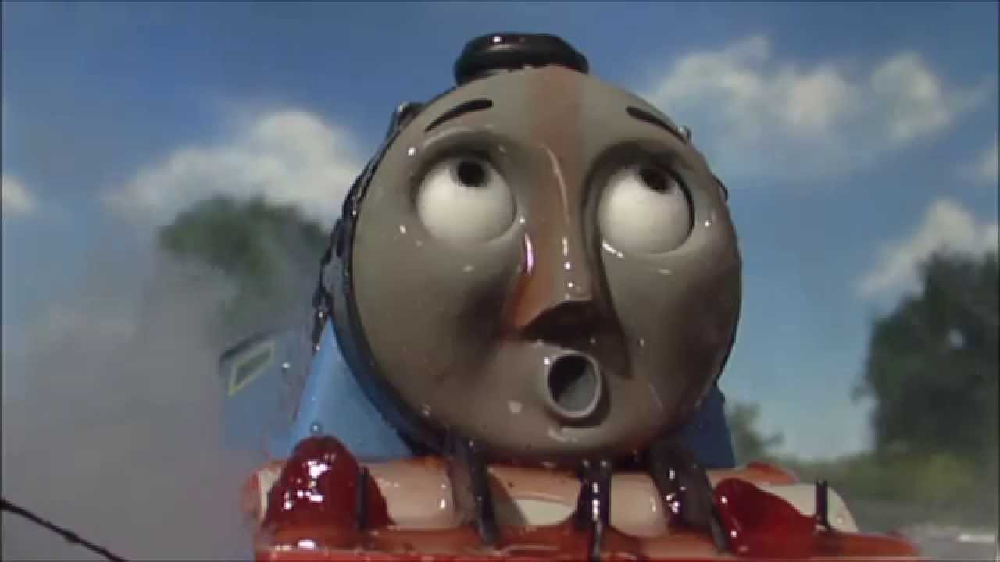
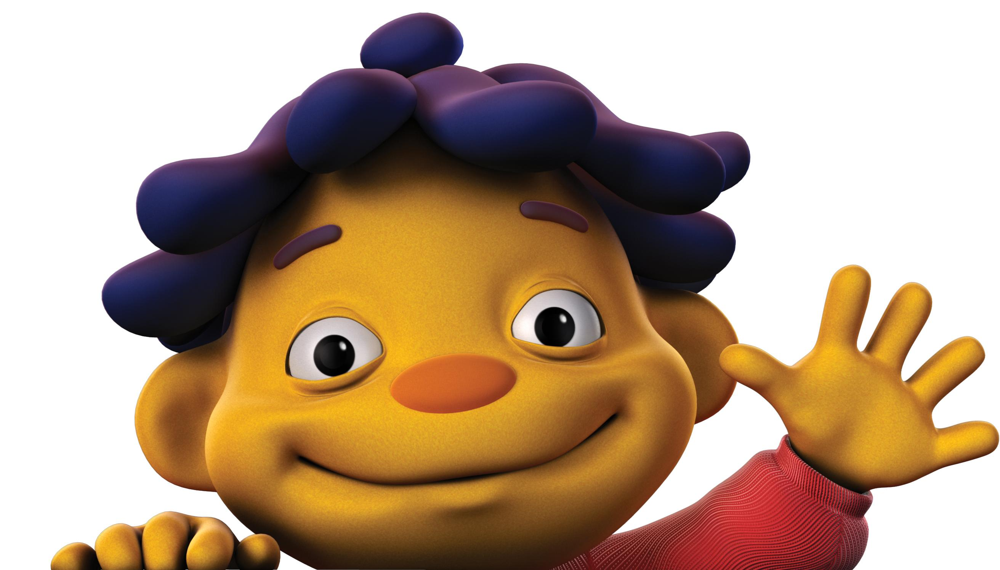
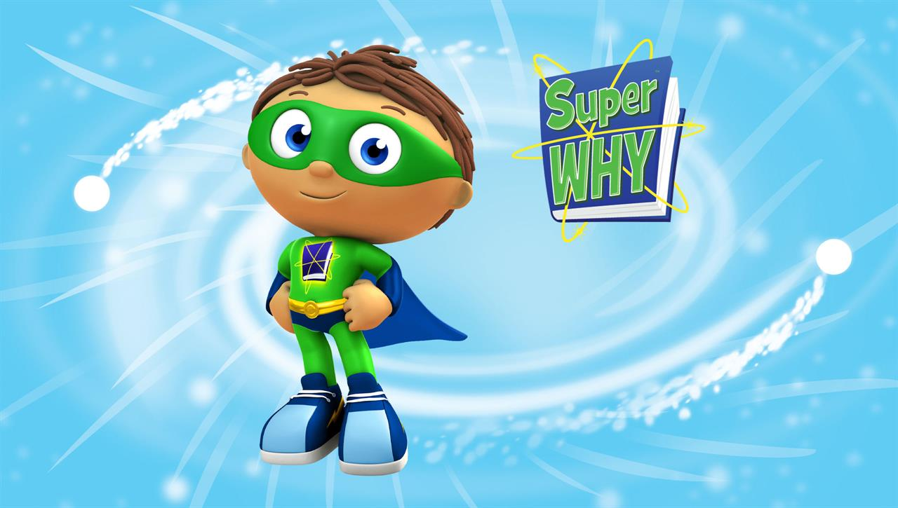

Thomas the Tank Engine
There´s two, there´s four, there´s six, there´s eight. Shunting trucks and hauling freight. Red and green and brown and blue, they're the really useful crew. All with different roles to play, round Tidmouth Sheds or far away. Down the hills and round the bends, Thomas and his friends. Thomas, he's the cheeky one. James is vain but lots of fun. Percy pulls the mail on time. Gordon thunders down the line. Emily really knows her stuff. Henry toots and huffs and puffs. Edward wants to help and share. Toby, well let's say, he's square! They're two, they're four, they're six, they're eight, shunting trucks and hauling freight. Red and green and brown and blue, they're the really useful crew. All with different roles to play, round Tidmouth Sheds or far away. Down the hills and round the bends, Thomas and his friends. They're two, they're four, they're six, they're eight, shunting trucks and hauling freight. Red and green and brown and blue, they're the really useful crew. All with different roles to play, round Tidmouth Sheds or far away. Down the hills and round the bends, Thomas and his friends!
Sid the Science Kid
Hey is this thing on? Hey Sid, what do you say, what’chawanna learn today? I want to know why things happen and how and I wanna know everything now. How does this thing work? Why does that stuff change? How does that do what it just did? What's up with the sky? Do you think I can fly? The world is spinning and I wanna know why. I got a lot of questions and big ideas, I'm Sid the Science Kid.
Superwhy Lyrics
Who's got the power, the power to read? Who answers the call, for friends in need? Super Why! Super Why, he's the guy, he's Super Why! Who's got the power, the power to read? Who looks into books for the answers we need? Super Why! Super Why and the Super Readers we're gonna fly. Come along, with the Super Readers. Adventure waits when you're with, Super Why! Super Why and the Super Readers, yeah, Super Why and the Super Readers... Adventure waits when you're with, Super Why! Yeah! Super Why!